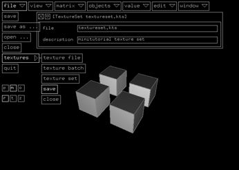
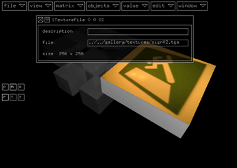
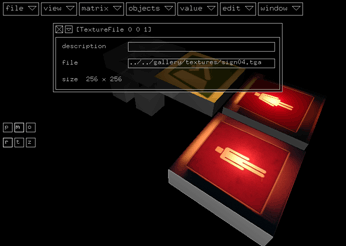
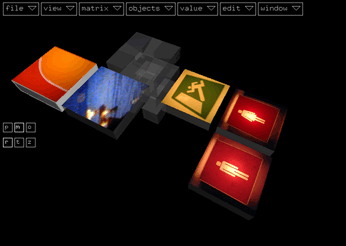
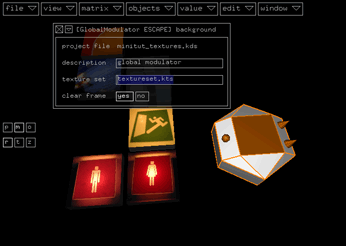
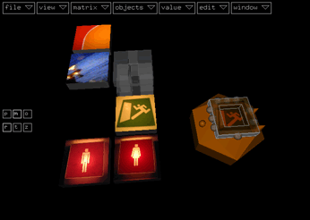
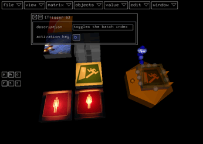
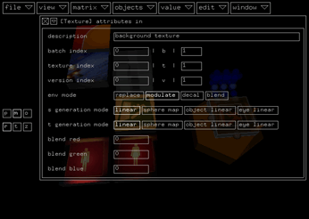

This mini tutotorial will explain how to create and use a texture
set.
First of all, create a new texture set module by activating file
> textures > texture set.
The first thing you should always do after creating a new texture
set module is to save it. Enter a filename with the suffix .kts
in it's inspector and activate file > textures > save
while the module is still selected:

The reason for saving the empty texture set is the following:
If you enter a path for a new texture which is not absoulte
(no leading '/'), it will be relative to the texture set file.
But without saving the texture set, kodisein doesn't know it's
location.
Connect the first texture batch to the set (file > textures
> texture batch) and a texture file to the batch (file
> textures > texture file). Open the texture file module's
inspector and enter a path to a texture file.
Note, that valid texture files will be displayed while using
the file completion feature of the filename field.

The fastest way to append new textures from the same directory
is to copy and paste the texture file module and changing the
last component of the path to the texture file (it's filename).
To append a texture version, select the version connector on
the left side of the texture file before creating or pasting a
texture file:

Use batches to sort your textures by themes or colors or usage,
etc:

When you are finished with the compilation of the new texture
set don't forget to save it again by selecting a module in it's
hierarchy and activating file > textures > save.
To use the textures of a texture set, you have to specify it's
filename in the global modulator's inspector of your project:

If you now add a texture attribute module (objects > atrtibutes
> texture) to the global modulators background connector,
it should display the first texture of the first batch:

Select the batch index connector of the texture attribute
module and activate value > shortcuts > trigger switches
value. This shortcut creates three modules: a trigger and
a variable both connected to a switch. The variable has a default
value of 1, so you just have to enter the activation key of the
new trigger:

Repeat the last step for the texture and version indices with
different activation keys:

If you now switch to play mode, you can use the activation keys
of the triggers to switch between the different textures.
If you create a larger texture set, a switch won't be sufficient
enough to reach all the textures. See the mini tutorial 'values'
for other ways of changing the indices.